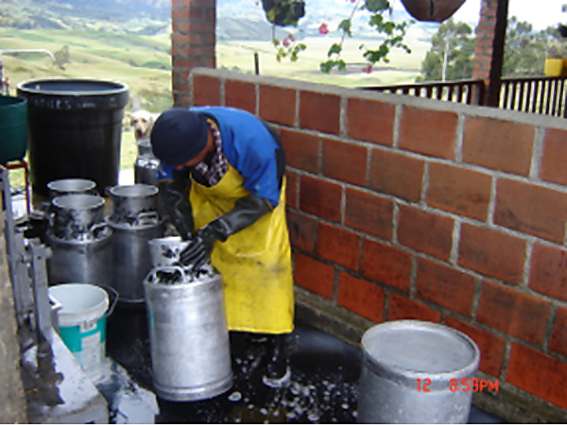

Plan de Acopio Rural y Enfriamiento de Leche Cruda Paletará (Puracé), Cauca
Paletará (Puracé), Cauca
Tecnología para fortalecer la producción lechera rural. El proyecto impulsa la cadena de frío para mejorar la calidad de la leche cruda, reducir pérdidas posordeño y optimizar el acopio en condiciones sanitarias y comerciales más competitivas.
La iniciativa beneficia a 62 pequeños productores del municipio de Puracé, fortaleciendo la organización local y la comercialización. Contempla capacidad de enfriamiento de 2.600 litros y una meta de acopio diario de 1.360 litros, mejorando la rentabilidad de las familias productoras.